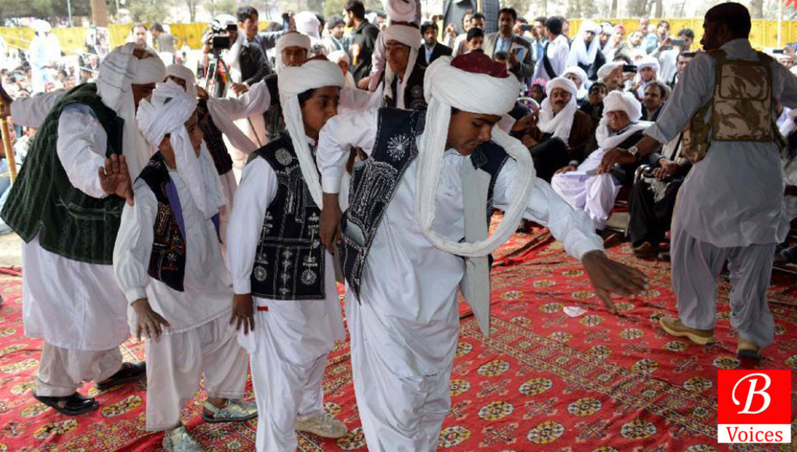
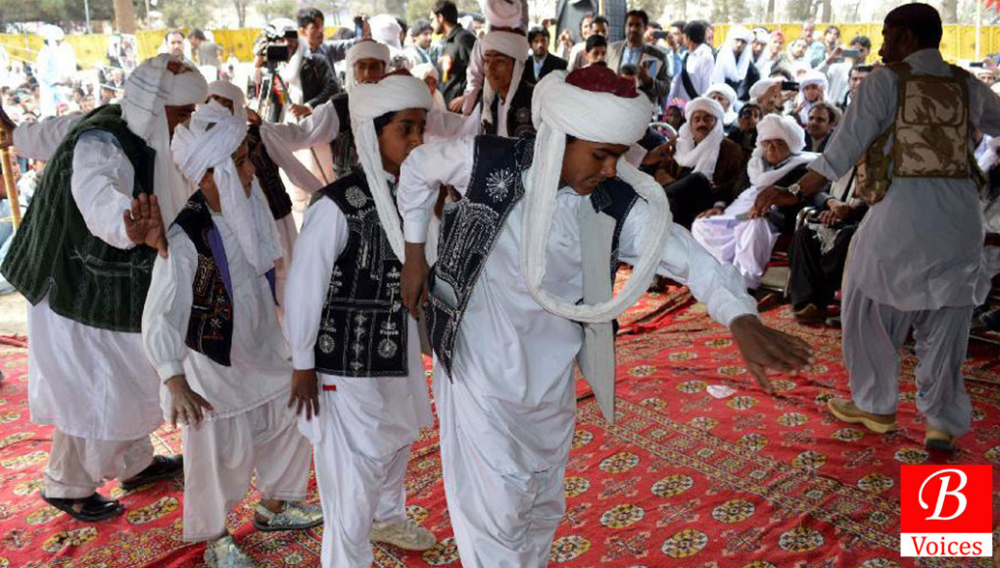

Balochistan is known for its long coastal belt which extends from Karachi through Sonmiani, Ormara, Kalmat, Pasni, Gwadar, Jiwani and all the way up to Iran. It is also popular for its hill tops and rugged mountainous terrain.
 
